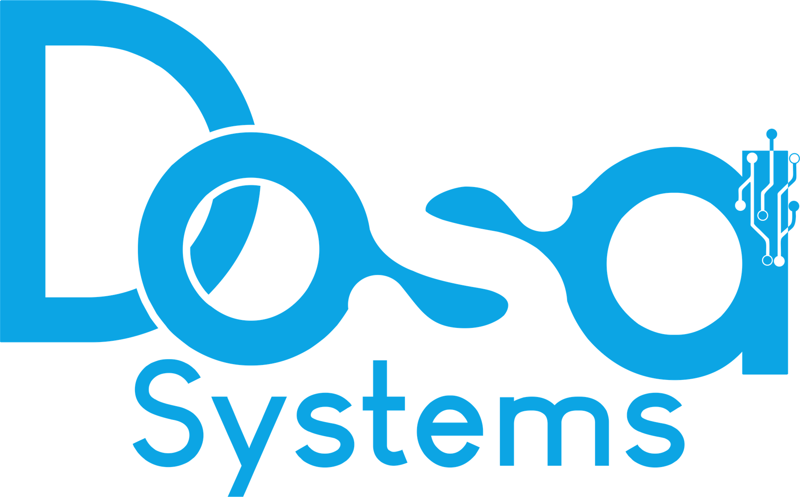
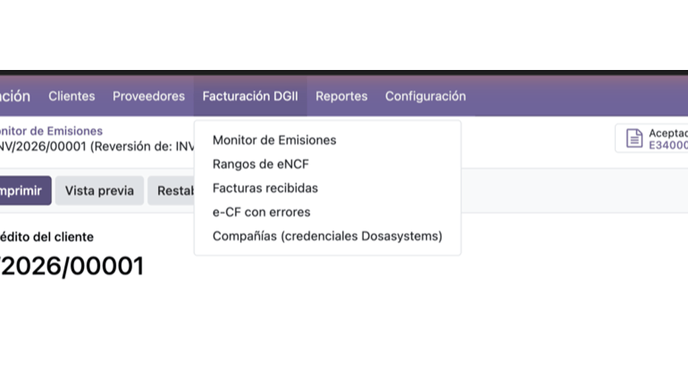
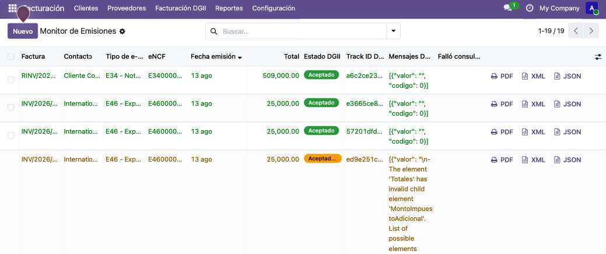
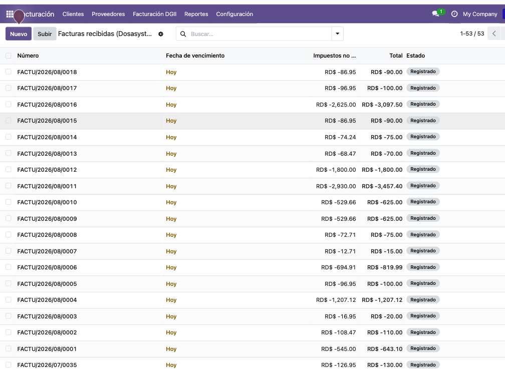
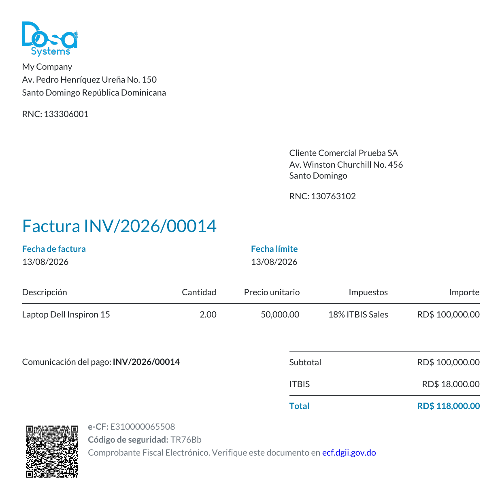
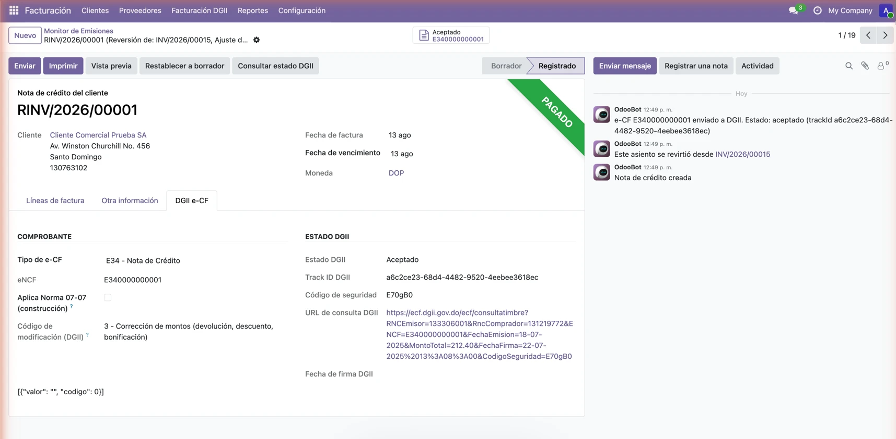
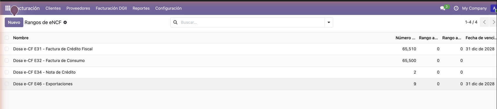

Facturación electrónica (e-CF) para la Dirección General de Impuestos Internos (DGII) de República Dominicana, vía Dosa Invoice Cloud. Emite, contabiliza y verifica tus comprobantes fiscales electrónicos sin salir de Odoo.


El menú de la DGII, el Monitor de Emisiones, las facturas recibidas, los rangos de eNCF, el detalle del e-CF y una factura impresa con su código QR de verificación — todo dentro del módulo de Facturación estándar de Odoo.
Emite comprobantes E31, E32, E34 (notas de crédito) y E46 (exportación) directamente desde tus facturas de Odoo. Tú decides: emisión automática al validar, o un botón en la propia factura — sin pantallas adicionales.
Sincroniza periódicamente los comprobantes electrónicos que emiten tus proveedores y los contabiliza como facturas de proveedor en Odoo, con los impuestos detectados automáticamente por línea.
Inserta el código QR oficial de verificación de la DGII en el reporte de factura nativo de Odoo — funciona junto a tu formato/logo actual, sin reemplazarlo.
Manejo dedicado para comprobantes de exportación (E46, con montos en moneda extranjera) y para el régimen especial de ITBIS del sector construcción (Norma 07-07).
Todos los e-CF emitidos en una sola lista, con su estado DGII, Track ID y mensajes — y, justo en cada fila, botones para reimprimir el PDF o descargar el XML/JSON firmado directamente desde Dosasystems, sin abrir la factura.

Cada e-CF recibido de un proveedor entra a Odoo ya contabilizado como factura de compra, con sus líneas, impuestos y fecha de vencimiento — probado en producción real con más de 50 facturas importadas sin intervención manual.

El QR, el eNCF y el código de seguridad se insertan en el reporte de factura nativo de Odoo, listo para que el cliente lo escanee y lo verifique en el portal de la DGII.

Una pestaña dedicada en la factura/nota de crédito muestra el tipo de comprobante, eNCF, estado DGII, Track ID, código de seguridad y enlace de verificación — más la tabla oficial de códigos de modificación de la DGII para notas de crédito.

Configura desde una sola pantalla el rango autorizado (desde/hasta) y la fecha de vencimiento de cada secuencia de eNCF por tipo de comprobante, con validación automática antes de emitir.

Sitio web: dosasystem.com
Teléfono: 829-491-0767
Esta app requiere una cuenta en Dosa Invoice Cloud (dosasystem.com) y le envía los datos necesarios para emitir un e-CF: los datos de factura, cliente y producto de tu empresa (nombres, RNC/identificación fiscal, direcciones, líneas y montos) para las facturas de venta, y lee de vuelta los datos de las facturas de proveedor correspondientes a los comprobantes que te emiten a ti. No se envía ningún dato hasta que configures tu propio API key y valides una factura o actives el envío automático.